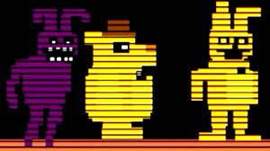
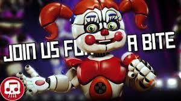
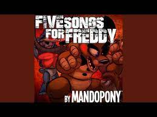
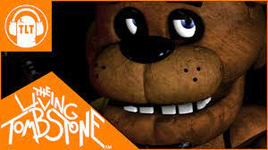
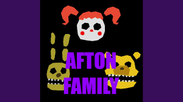
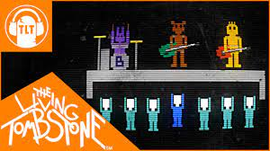
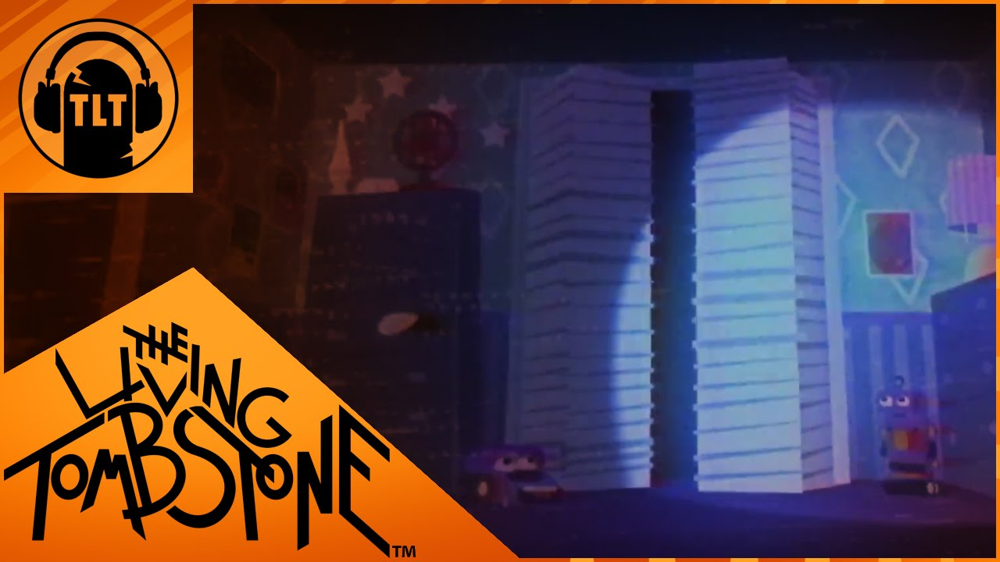
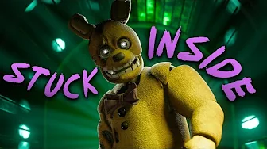
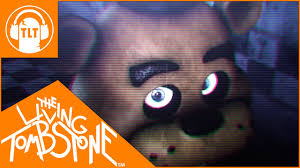

Cette partie du chapitre Communauté sera dédiée aux musiques créées par la communauté
Comme vous l’avez remarqué, la musique de fond se lance automatiquement (comme sur les autres pages) mais on peut toujours l’arrêter. C’est pour une bonne cause, c’est parce que vous allez écouter d’autres musiques comme celles que vous avez écoutées sur les autres pages (sauf celle de la page communauté, celle-ci vient du générique du film FNaF)
En premier, nous allons vous lister TOUTES les musiques que vous avez pu entendre tout au long du site. Cette liste contiendra le nom de la musique, la ou les personnes qui ont créé la musique, la miniature de la musique sur YouTube et la partie du site où vous avez pu l’entendre
Les Musiques du Site
Musique : Bonnie's Lullaby Auteur : Scott Cawthon Site : Accueil

Musique : Join us for a Bit Auteur : JT Music Site : Histoire

Musique : Survive the Night Auteur : Mandopony Site : Surréalisme

Musique : Five Night at Freddy's Instrumental Auteur : The Living Tombstone Site : Secret non Dévoilée

Musique : Five Night at Freddy's Générique Auteur : The Newton Brother Site : Communautée
Musique : Joy of Creation Menu Auteur : Nathan Hanover Site : Fangame
Musique : The Afton Family Auteur : KryFuZe Site : Musique

Musique : Its Been So Long Auteur : The Living Tombstone Site : Crédit

Autres musiques de la communauté
Nous allons maintenant vous faire écouter 3 autres musiques qu'a pu faire la communauté
Musique : I Got no Time Auteur : The Living Tombstone

Musique : Stuck Inside Auteurs : Black Gryph0n avec The Living Tombstone & Kévin Foster

Musique : Die in a Fire Auteur : The Living Tombstone

Et voilà, vous avez pu voir certaines musiques de la communauté. Bien sûr, nous ne pouvons pas vous montrer toutes les musiques faites par la communauté, mais j’espère que cela vous a plus. Maintenant, passons aux crédits…